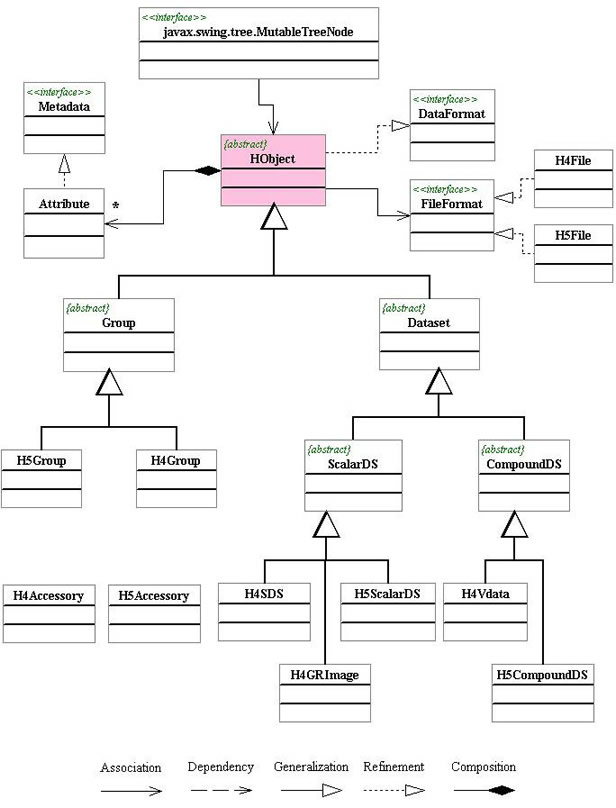

The Software packages
[Index] [1] [2] [3] [4] [5] [6] [7]
HDF files may contain many types of data objects that a scientist might need. HDFView displays the data objects appropriately according to their types. For example, a two-dimension dataset with an associated palette will be displayed as an image. When you open an HDF file with HDFView, you see the tree structure of an HDF file, showing the objects and their groupings. You can select an object from the tree to view its content.
HDF4 (i.e. HDF version 4) is based on the original 1988 version of HDF. Versions 1, 2, 3, and 4 of HDF were all backward compatible, and HDF4 can access files created by all earlier versions. HDF5 is a completely new format and library. Although they are conceptually related, HDF5 files cannot be read by the HDF4 library and vice versa. HDF5 was designed to address some of the limitations of HDF4 and to address and exploit current and anticipated requirements of modern systems and applications.
HDFView is built on a common HDF object model and suports both versions of HDF. The HDF object model was designed in such a way that the HDF4 and HDF5 objects interact with users through a common object layer so the user interface design will be independent of the file format (HDF4 or HDF5). Such a design allows the HDFView to support and convert objects of different formats (HDF4 and HDF5).
The HDF Object Package is a Java package that implements HDF4 and HDF5 data objects in an object-oriented form. The HDF Java Object Package provides common standard Java APIs to access both HDF4 and HDF5 files.
The HDF Object Package is NOT a "wrapper" for the native HDF libraries, and it requires the HDF4 and HDF5 wrappers. The HDF4 and HDF5 wrappers are separate HDF Java products. For details about the HDF4 and HDF5 native interfaces, read NCSA Java HDF Interface (JHI) and NCSA Java HDF5 Interface (JHI5).
The HDF Object Package implements higher level APIs and encapsulates HDF library calls into an object-oriented fashion for easy access to HDF files. For example, to retrieve data content from an HDF5 dataset by using the HDF5 library APIs directly, you have to make many calls, such as, get the datatype information (datatype class, size, sign, and etc), get the dataspace information (number of dimension, dimension sizes), and allocate the data buffer. The HDF Object Package puts all these calls into a single call - read().
The HDF Object Package, ncsa.hdf.object, provides classes that reflect fundamental concepts to the design of HDF objects. Objects of HDF5 (group and dataset) and HDF4 (group, multi-dimension array, raster image, vdata and annotation) are presented as Java classes.
The HDF Object Package has two major goals. First, it simplifies the process of reading information from or writing data to a file because the details of accessing the HDF library are encapsulated into respective classes. Second, HDF4 and HDF5 objects are inherited from the same common object and interface. Applications can use the HDF Object Package to access objects from either HDF4 or HDF5 in a uniform way, without accessing the libraries directly. The following diagram explains the relationship of the object package, HDF JNI, and application.
HDF Applications <==> HDF Object Package <==> HDF4/5 Java Wrapper (JNI4/5) <==> HDF File
The HDF Object Package implements an abstract data model, and the objects of the HDF4 and HDF5 data models are represented as instances of the abstract objects. The abstract class HObject has two fundamental abstract classes, Group and Dataset, and all HDF5 and HDF4 objects are a sub-type of one of these abstract classes.
The following figure shows the class hierarchy of the HDF Object Package. In the following, we give a brief description of these Java classes of HDF objects. For details, see the Java docs at /hdf-java-html/javadocs/ .
The classes at the top of the class hierarchy are interfaces and abstract classes. These interfaces and abstract classes define all the necessary public APIs to retrieve information and data from HDF files. The classes at the bottom are the implementing classes, which implement the public APIs defined by the top classes.

The Class Hierarchy of HDF Objects.
Interface Summary |
|
| DataFormat | DataFormat describes general I/O operations of a data object, such as read data content or data attributes into memory, write data content or data attributes onto disk. |
| FileFormat | FileFormat defines general I/O accessing interface to file resources, such as open/close a file, and retrieve the file structure. |
| Metadata | Metadata is a general interface about supporting data. |
Class Summary |
|
| Attribute | Attribute holds a (name, value) pair of an HDF4/5 attribute. |
| CompoundDS | CompoundDS is the superclass for HDF4 and HDF5 Compound Dataset. |
| Dataset | Dataset is the superclass for HDF4/5 Dataset, inheriting the HObject. |
| Datatype | Datatype holds a (name, value) pair of an HDF4/5 attribute. |
| Group | Group is the superclass for HDF4 and HDF5 group, inheriting the HObject. |
| H4Datatype | H4Datatype holds a (name, value) pair of an HDF4/5 attribute. |
| H4File | H4File provides file level APIs. |
| H4GRImage | H4GRImage describes a HDF4 general raster(GR) image and operations performed on the GR image. |
| H4Group | H4Group is a vgroup in HDF4, inheriting from Group. |
| H4SDS | H4SDS describes HDF4 Scientific Data Sets (SDS) and operations performed on the SDS. |
| H4Vdata | H4Vdata describes a multi-dimension array of HDF4 vdata, inheriting CompoundDS. |
| H5CompoundDS | H5CompoundDS describes a multi-dimension array of HDF5 compound dataset, inheriting CompoundDS. |
| H5Datatype | H5Datatype holds a (name, value) pair of an HDF4/5 attribute. |
| H5File | H4File provides file level APIs. |
| H5Group | H5Group represents a HDF5 group, inheriting from Group. |
| H5ScalarDS | H5ScalarDS describes a multi-dimension array of HDF5 scalar or atomic data types and operations performed on the scalar dataset, such as byte, int, short, long, float, double, and string. |
| HObject | HObject is the superclass for the HDF data hierarchy, inheriting the DataFormat interface. |
| ScalarDS | ScalarDS is the superclass for HDF4/5 ScalarDS, inheriting Dataset. |
The HDF Object Package is used by Java applications to access HDF4 and HDF5 files without directly calling the HDF4 and HDF5 library APIs. Library calls are encapsulated into respective classes. The HDF Object Package requires the NCSA Java HDF Interface (JHI) and the NCSA Java HDF5 Interface (JHI5).
The Software packages
The following examples show how to retrieve file hierarchy using the HDF Object Package.
import ncsa.hdf.object.*; // include the common HDF object package
import ncsa.hdf.object.h5.*; // include the HDF5 object package
import ncsa.hdf.hdf5lib.*; // include the Java HDF5 interface
/**
* Retreve and print HDF5 objects from file hdf5_test.h5
* @version 1.3.0 10/26/2001
* @author Peter X. Cao
*
*/
public class TestH5File
{
public static void main(String[] argv)
{
// create an H5File object
H5File h5file = new H5File("hdf5_test.h5", HDF5Constants.H5F_ACC_RDONLY);
try
{
// open file and retrieve the file structure
h5file.open();
}
catch (Exception ex)
{
System.out.println(ex);
}
javax.swing.tree.MutableTreeNode root = h5file.getRootNode();
if (root != null)
{
printNode(root, " ");
}
try { h5file.close(); }
catch (Exception ex ) {}
}
// print out the data object recusively
private static void printNode(javax.swing.tree.TreeNode node, String indent)
{
System.out.println(indent+node);
int n = node.getChildCount();
for (int i=0; i<n; i++)
{
printNode(node.getChildAt(i), indent+" ");
}
}
}
import ncsa.hdf.object.*; // include the common HDF object package
import ncsa.hdf.object.h4.*; // include the HDF4 object package
import ncsa.hdf.hdflib.*; // include the Java HDF5 interface
/**
* Retreve and print HDF4 objects from file annras.hdf.
* @version 1.3.0 10/26/2001
* @author Peter X. Cao
*
*/
public class TestH4File
{
public static void main(String[] argv)
{
// create an H4File object
H4File h4file = new H4File("annras.hdf", HDFConstants.DFACC_READ);
try
{
// open file and retrieve the file structure
h4file.open();
}
catch (Exception ex)
{
System.out.println(ex);
}
javax.swing.tree.MutableTreeNode root = h4file.getRootNode();
if (root != null)
{
printNode(root, " ");
}
try { h4file.close(); }
catch (Exception ex ) {}
}
// print out the data object recusively
private static void printNode(javax.swing.tree.TreeNode node, String indent)
{
System.out.println(indent+node);
int n = node.getChildCount();
for (int i=0; i<n; i++)
{
printNode(node.getChildAt(i), indent+" ");
}
}
}
[Index] [1] [2] [3] [4] [5] [6] [7]